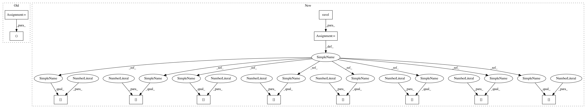

f877491f58df5667e65aff742f872625cb48df56,doc/examples/segmentation/plot_peak_local_max.py,,,#,18
Before Change
// display results
fig, ax = plt.subplots(1, 3, figsize=(8, 3), sharex=True, sharey=True,
subplot_kw={"adjustable": "box-forced"})
ax1, ax2, ax3 = ax.ravel()
ax1.imshow(im, cmap=plt.cm.gray)
ax1.axis("off")
ax1.set_title("Original")
After Change
// display results
fig, axes = plt.subplots(1, 3, figsize=(8, 3), sharex=True, sharey=True,
subplot_kw={"adjustable": "box-forced"})
ax = axes.ravel()
ax[0].imshow(im, cmap=plt.cm.gray)
ax[0].axis("off")
ax[0].set_title("Original")
ax[1].imshow(image_max, cmap=plt.cm.gray)
ax[1].axis("off")
ax[1].set_title("Maximum filter")
ax[2].imshow(im, cmap=plt.cm.gray)
ax[2].autoscale(False)
ax[2].plot(coordinates[:, 1], coordinates[:, 0], "r.")
ax[2].axis("off")
ax[2].set_title("Peak local max")
fig.tight_layout()
In pattern: SUPERPATTERN
Frequency: 3
Non-data size: 12
Instances
Project Name: scikit-image/scikit-image
Commit Name: f877491f58df5667e65aff742f872625cb48df56
Time: 2016-06-07
Author: devel@sciunto.org
File Name: doc/examples/segmentation/plot_peak_local_max.py
Class Name:
Method Name:
Project Name: scikit-image/scikit-image
Commit Name: ac3be33ac656db7685ac1d9a329a9060d8c05759
Time: 2017-04-07
Author: devel@sciunto.org
File Name: doc/examples/transform/plot_rescale.py
Class Name:
Method Name:
Project Name: scikit-image/scikit-image
Commit Name: f877491f58df5667e65aff742f872625cb48df56
Time: 2016-06-07
Author: devel@sciunto.org
File Name: doc/examples/segmentation/plot_peak_local_max.py
Class Name:
Method Name:
Project Name: scikit-image/scikit-image
Commit Name: f877491f58df5667e65aff742f872625cb48df56
Time: 2016-06-07
Author: devel@sciunto.org
File Name: doc/examples/transform/plot_radon_transform.py
Class Name:
Method Name: